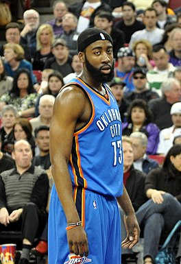

Harden foi selecionado na primeira rodada do Draft da NBA de 2009 pelo Oklahoma City Thunder como a terceira escolha geral. Isso fez dele o primeiro jogador a ser draftado pela franquia após a mudança de nome e de cidade, pois no último draft ainda eram conhecidos como Seattle SuperSonics.
Em sua primeira temporada na NBA, Harden teve média de 9,9 pontos em 22,9 minutos. Ele foi nomeado para a Segunda-Equipe do All-Rookie Team. Em sua segunda temporada, após rejeitar uma oferta para jogar como titular, Harden jogou em todos os 82 jogos da temporada regular e teve média de 12,2 pontos. Nos playoffs, ele teve média de 13 pontos por jogo, com um aproveitamento de mais de 47% dos arremessos de quadra.
Oklahoma 09-12

Em 18 de abril de 2012, Harden marcou 40 pontos em uma vitória por 109–97 sobre o Phoenix Suns. Quatro dias depois, contra o Los Angeles Lakers, Harden sofreu uma concussão depois de sofrer uma cotovelada de Metta World Peace dos Lakers, que estava comemorando uma enterrada. World Peace foi expulso, e mais tarde suspenso por sete jogos. Harden retornou para o primeiro jogo dos playoffs contra o Dallas Mavericks.
Harden terminou a temporada de 2011–12 com média de 16,8 pontos, a melhor média entre todos os reservas da NBA. Ele foi nomeado o Sexto Homem do Ano, transformando-se no segundo jogador mais novo a ganhar o prêmio. Ele foi um dos cestinhas mais eficientes da liga, terminando em segundo lugar na porcentagem de arremessos totais, incluindo arremessos de quadra, de três pontos e lances livres, e de arremessos de quadra convertidos, registrando 66% e 58% respectivamente. Harden ajudou o Thunder a chegar às Finais da NBA de 2012, em que perderam para o Miami Heat.
Durante o período de agente livre, o Oklahoma City tentou assinar com Harden uma extensão de contrato de quatro anos entre 52 e 55 milhões de dólares. Harden alegou mais tarde que lhe foi dado pouco tempo para considerar a oferta.
Houston Rockets 13-16

Em 31 de outubro de 2012, Harden assinou uma extensão de contrato com os Rockets por cinco anos no valor de $ 80 milhões. Naquele mesmo dia, ele se tornou o primeiro jogador da NBA a marcar 37 ou mais pontos enquanto registrava um total de assistências de dois dígitos em sua estréia na equipe, regitrando 37 pontos, 12 assistências, seis rebotes, quatro roubos de bola e um bloqueio em uma vitória por 105-96 sobre o Detroit Pistons. Ele se tornou apenas o quarto jogador da NBA nos últimos 25 anos a ter essas estatisticas em um único jogo e igualou o terceiro maior total de pontos de qualquer jogador da NBA em sua estréia na equipe. Dois dias depois, ele marcou 45 pontos contra o Atlanta Hawks. Seu total de 82 pontos foi a maior marca de um jogador em seus dois primeiros jogos com um time na história da NBA, superando a marca anterior de Wilt Chamberlain, que marcou 79 pontos em seus dois primeiros jogos no Philadelphia Warriors em 1959.
Harden foi escolhido pelos treinadores como reserva do All-Star Game da NBA de 2014, que marcou sua segunda seleção All-Star consecutiva. Mais tarde, ele foi nomeado como titular substituto. Ele registrou oito pontos, cinco assistências, um rebote e um roubo de bola em 23:46 de ação.
Ele foi duas vezes nomeado Jogador da Semana da Conferência Oeste durante a temporada, ambas em semanas consecutivas (24 de fevereiro a 2 de março; 3 a 9 de março). Ele se tornou o primeiro jogador dos Rockets a receber o título de Jogador da Semana em semanas consecutivas na mesma temporada.
Em 5 de fevereiro de 2014 contra o Phoenix Suns, Harden jogou em sua 120ª partida com Houston, marcando 23 pontos e se tornando apenas o terceiro jogador a marcar pelo menos 3.000 pontos em seus primeiros 120 jogos com os Rockets, juntando-se a Elvin Hayes (3.320) e Tracy McGrady (3.056). Em 25 de fevereiro de 2014, ele marcou 43 pontos, o recorde da temporada, na vitória por 129-103 sobre o Sacramento Kings.
No final da temporada, ele foi selecionado para a Primeira Equipe All-NBA.
Em 19 de janeiro de 2015, Harden marcou 45 pontos, o recorde da temporada, contra o Indiana Pacers. Ele empatou essa marca de 45 pontos contra o Trail Blazers em 8 de fevereiro de 2015. Em 23 de fevereiro de 2015, ele registrou seu segundo triplo-duplo da temporada com 31 pontos, 11 rebotes e 10 assistências em uma vitória de 113–102 sobre o Minnesota Timberwolves. Em 6 de março de 2015, ele registrou seu terceiro triplo-duplo da temporada com 38 pontos, 12 rebotes e 12 assistências em uma vitória por 103-93 sobre o Detroit Pistons. Em 19 de março de 2015, ele marcou 50 pontos, o recorde de sua carreira, contra o Denver Nuggets. Ele passou essa marca com 51 pontos contra os Kings em 1 de abril de 2015. Foi seu 33º jogo de 30 pontos na temporada e seu nono jogo de 40 pontos na temporada. Ele se tornou o primeiro jogador na história da franquia a ter dois jogos de 50 pontos em uma temporada. Quatro dias depois, ele marcou 41 pontos contra o Oklahoma City Thunder em seu 10º jogo de 40 pontos da temporada.
No último jogo da temporada regular dos Rockets em 15 de abril, Harden registrou seu quarto triplo-duplo da temporada com 16 pontos, 11 rebotes e 10 assistências na vitória por 117–91 sobre o Utah Jazz. Ele ajudou os Rockets a ganhar o seu primeiro título da divisão desde 1994 e conquistou a segunda posição na Conferência Oeste. Harden foi novamente nomeado para a Primeira-Equipe All-NBA e terminou em segundo lugar na votação de MVP, atrás de Stephen Curry.
Houston Rockets 17-18 MVP Season

Em 25 de março, ele ajudou os Rockets a alcançar 60 vitórias em uma temporada pela primeira vez na história da franquia, registrando um triplo-duplo (quarto da temporada, 35º da carreira) com 18 pontos, 15 assistências e 10 rebotes em três quartos em um vitória de 118–99 sobre o Atlanta Hawks. Os Rockets terminaram a temporada regular como a melhor campanha da confêrencia pela primeira vez na história da franquia com um recorde de 65-17. Harden ganhou seu primeiro título de pontuação, com média de 30,4 pontos, o segundo na história da franquia, perdendo para os 31,1 de Malone em 1981-82.
No Jogo 1 da série de playoffs contra o Minnesota Timberwolves, Harden marcou 44 pontos em uma vitória por 104-101. No Jogo 1 de sua série de segunda rodada contra o Utah Jazz, Harden marcou 41 pontos em uma vitória por 110-96. Foi o seu sexto jogo de playoff de 40 pontos de sua carreira. No Jogo 1 das finais da Conferência Oeste, Harden marcou 41 pontos na derrota por 119–106 para o Golden State Warriors. No Jogo 4 contra o Warriors, Harden marcou 30 pontos para ajudar o Rockets a empatar a série em 2–2 com uma vitória de 95–92. No Jogo 6, ele registrou 32 pontos, nove assistências e sete rebotes em uma derrota por 115-86.[86] Apesar de um esforço de 32 pontos de Harden no Jogo 7, os Rockets foram eliminado dos playoffs com uma derrota por 101-92.
Em junho, Harden foi nomeado o MVP da NBA na temporada de 2017-18, tornando-se o terceiro jogador na história da franquia a receber o prêmio, juntando-se a Moses Malone (1978-79 e 1981-82) e Hakeem Olajuwon (1993-94).